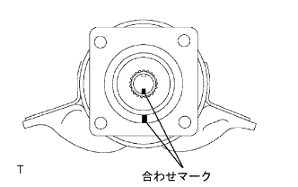
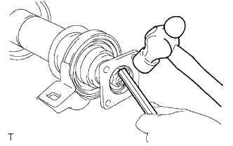
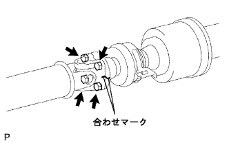

プロペラシャフト ウィズ センタベアリングASSY（4WD） 取り付け |
| 1. センタサポート ベアリングASSY NO.1取り付け（リヤ） |
センタサポートベアリングASSY No.1(リヤ)および新品のワッシャをインタミディエイトシャフトASSYに取り付ける。
|  |
合わせマークを合わせ、ユニバーサルジョイントフランジ(リヤ側)をシャフトに取り付ける。
SSTを使用して、ユニバーサルジョイントフランジ(リヤ側)を保持し、ワッシャを介して、新品のナットを締め付け、フランジを圧入する。
一度ナットをゆるめ、再度ナットを締め付ける。
|  |
タガネおよびハンマーを使用して、ナットをかしめる。
| 2. センタサポート ベアリングASSY NO.1取り付け（フロント） |
センタサポートベアリングASSY No.1(フロント)および新品のワッシャをインタミディエイトシャフトASSYに取り付ける。
 |
合わせマークを合わせ、ユニバーサルジョイントフランジ(フロント側)をシャフトに取り付ける。
SSTを使用して、ユニバーサルジョイントフランジ(フロント側)を保持し、ワッシャを介して新品のナットを締め付け、フランジを圧入する。
一度ナットをゆるめ、再度ナットを締め付ける。
タガネおよびハンマーを使用して、ナットをかしめる。
| 3. プロペラインタミデイエイトシヤフトASSY取り付け |
 |
合わせマークを合わせ、ボルト４本、ワッシャおよびナット各４個で、インタミディエイトシャフトASSYをプロペラシャフトASSY RRに取り付ける。
| 4. プロペラシャフトASSY取り付け |
|  |
合わせマークを合わせ、ボルト４本、ワッシャおよびナット各４個で、プロペラシャフトASSYをプロペラインタミディエイトシャフトASSYに取り付ける。
| 5. プロペラシャフト ウィズ センタベアリングASSY仮締め |
 |
エクステンションハウジングからSSTを取りはずし、プロペラウィズセンタベアリングシャフトASSYを挿入する。
 |
ボルト４本で、インタミディエイトシャフトASSYを仮締めする。
 |
プロペラシャフトASSY RRおよびディファレンシャルフランジの合わせマークを合わせ、ボルト４本、ワッシャおよびナット各４個で、プロペラシャフトASSY RRを取り付ける。
| 6. プロペラシャフト ウィズ センタベアリングASSY本締め |
 |
ジャッキを使用して、リヤアクスルハウジングを持ち上げ、サスペンションに荷重をかける。
フロントおよびリヤのセンタサポートベアリングハウジング後端面とクッション後端面とが基準値の範囲内になるように調節する。
センタサポートベアリングブラケット中心線がプロペラシャフト軸に対して直角になっていることを確認する。
|
ボルト４本を本締めする。